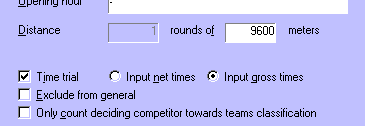

Time Trials
Every
half stage can be a time trial.
Time trials are treated distinctly different than regular
half stages. The differences are:
- For a time trial a starting order and starting times have to be entered
in the
Time trial starting order dialog;
- Competitors
get their ranking automatically based on the time that they ride, rather
than the actual ranking being entered;
- Optionally, gross times can
be entered which are automatically calculated into net times, based on the
starting time; and
- For time trials no
cross out lists are generated.
Activation
A
half stage can be set to be a time trial by use of the tab sheet
Half stage settings of the
configuration of the particular half stage. This can be found through
in the
menu, when the appropriate
half stage is selected in the
event tree.

Setting a time trial using the Half stage settings dialog
Time Trial
When you set a
half stage to be a time trial, the number of rounds is automatically
set to one, and the net or gross time selection becomes available.
After confirmation the
event tree is updated, displaying the time trial and the Starting
order within.
Net or Gross
There are two modes for time trials:
- Input gross times
The
arrival time that is entered is the time between the start of the first
competitor and the finish of the concerning competitor. StageRace will take
the entered time and subtract from this the start time of the concerning
competitor. For this the starting order of the time trial is used. - Input
net times
The arrival time that is entered is exactly the
time that it took that competitor to finish the race. The
starting order of the time trial is only used informatively.